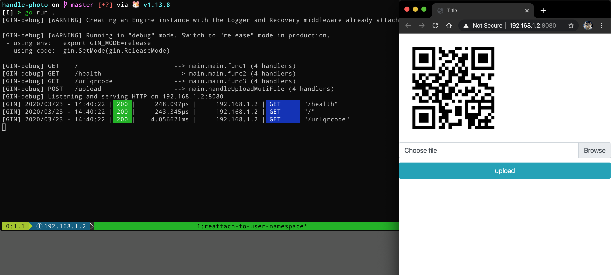
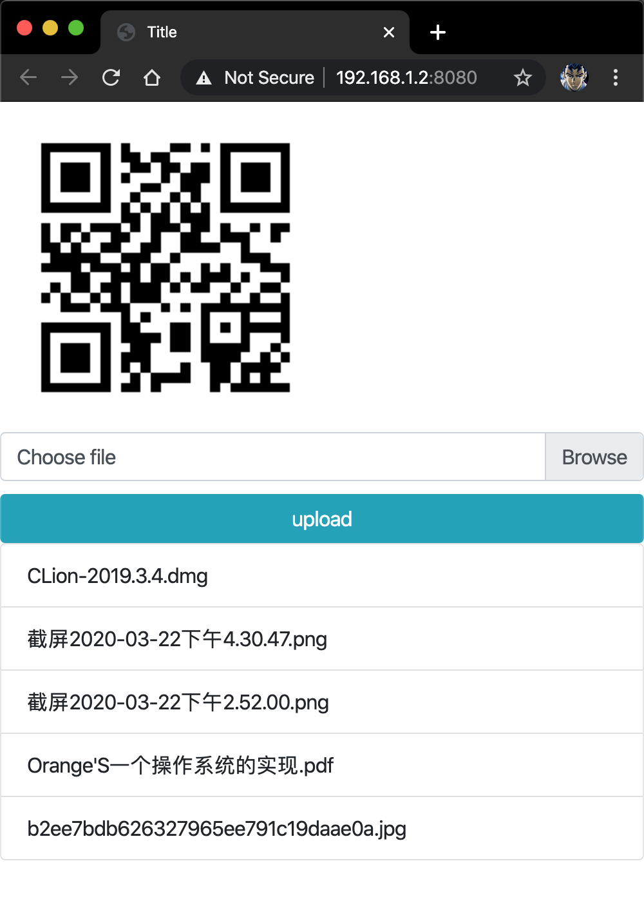
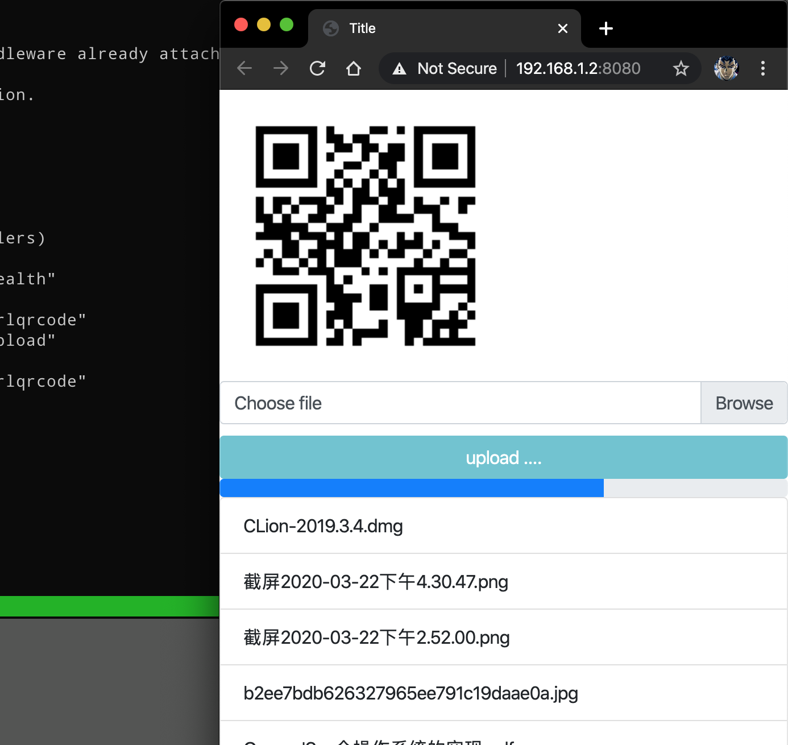
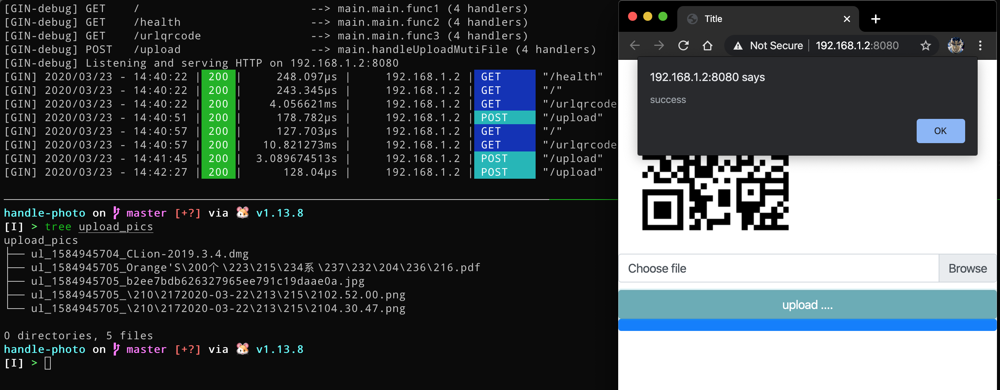

最近老爸换了台笔记本电脑，希望可以从手机向电脑传照片，新笔记本电脑的蓝牙和手机蓝牙老是连不上，试了别的一些手机照片管理软件，但是在电脑上都安装不起来，都是缺少某些 dll 文件，同时老爸觉得手机和电脑进行有线连接太麻烦的。于是乎我就有了一个想法，在笔记本电脑上运行个服务端提供上传文件的功能不就行了吗，只要手机和电脑是在用一个 WiFi 局域网下就可以了，手机浏览器访问电脑上的服务端程序上传文件，非常简单的需求。
代码在 Github 上
首先先选取编程语言，首先将解释型语言以及需要虚拟机运行的语言 pass，因为我希望服务端程序体积尽量地小，最好就是一个可执行二进制文件，同时做到部署时零配置，图形界面点击图标即运行；底层语言 pass，因为我想几个小时内就写出这个程序，而且我也需要能交叉编译，因为我的开发电脑是 MacOS，而老爸的笔记本电脑是 Windows7。我熟悉的编程语言就那么几种，这么排除下来就剩下 Golang 了，版本为 1.13。
给别人的用的程序最重要的要求是操作方便，所以我为笔记本电脑上运行的服务端程序设计了几个特性：点击可执行文件后直接打开浏览器，用来显示当前链接的二维码，方便手机扫码；同时，上传文件时需要显示进度条，方便查看进度。
由于是在家里的局域网中自行使用，所以没有添加任何权限校验以及安全校验。
从开发到验收（其实就是部署到 Win7 笔记本电脑上后用老爸手机上传几个文件），总共用了三个小时不到。其中不可避免地出现部分由于复制粘贴重复的代码，不过都无伤大雅。
服务端使用到了 gin-contrib/gin 作为服务端框架，skip2/go-qrcode 用于生成二维码，前端用的是 BootStrap4 和 JQuery。总之，就是怎么开发快怎么来，下面介绍几个技术点。
自动打开浏览器 在网上找到的一个代码段，直接用就 OK
1 2 3 4 5 6 7 8 9 10 11 12 13 14 15 16 17 func openbrowser (url string ) var err error switch runtime.GOOS { case "linux" : err = exec.Command("xdg-open" , url).Start() case "windows" : err = exec.Command("rundll32" , "url.dll,FileProtocolHandler" , url).Start() case "darwin" : err = exec.Command("open" , url).Start() default : err = fmt.Errorf("unsupported platform" ) } if err != nil { log.Fatal(err) } }
获取当前的 IP 我希望获取的是电脑在局域网中的 IP，而不是诸如 127.0.0.1 这样的 lo 地址。也是在网上找到的代码段，直接用就 OK，应该是请求本地的 DNS。
1 2 3 4 5 6 7 8 9 10 11 func getOutboundIP () net .IP conn, err := net.Dial("udp" , "8.8.8.8:80" ) if err != nil { log.Fatal(err) } defer conn.Close() localAddr := conn.LocalAddr().(*net.UDPAddr) return localAddr.IP }
在服务启动后打开浏览器 之前以及提到过，希望可以在程序启动后打开浏览器，但是 gin 并没有为开发者提供类似于 AfterStart 这样的 hook ，所以这里采用的是使用心跳检测的方法。
首先，为服务端程序提供了心跳检测的 api ，如下
1 2 3 4 5 6 r := gin.Default() r.GET("/health" , func (c *gin.Context) c.JSON(http.StatusOK, gin.H{ "message" : "ok" , }) })
随后，开一个 goroutine 不停地向这个 api 发起请求，当程序完全启动后，也就是这个 api 接口正常响应后，执行打开浏览器的函数
1 2 3 4 5 6 7 8 9 10 11 12 13 14 15 16 17 18 func setopenbrowser (serverAddr string ) go func () reqUrl := fmt.Sprintf("http://%s/health" , serverAddr) for { var ( client = &http.Client{Timeout: time.Second * 5 } err error resp *http.Response ) if resp, err = client.Get(reqUrl); err != nil { continue } defer resp.Body.Close() openbrowser("http://" + serverAddr) break } }() }
这里吐槽一点，我是使用的 Intellij IDEA 进行开发的，如果就直接点击 IDE 中的 Run 运行程序的话，请求该心跳接口一直返回的是 EOF，我被这个问题困扰了很久，最后在网上查到，这是因为在 Intellij IDEA 中，我设置了 http proxy（因为直连它的插件商店太慢了），所以才会出现这样的问题，于是我就直接在命令行中直接 go run . 运行程序了。
处理上传的文件 这里我是直接 copy 网上的代码的 … 因为快啊 (￣ ▽ ￣)” ，这里贴出了部分代码
1 2 3 4 5 6 7 8 9 10 11 12 13 14 15 16 17 18 19 20 21 22 23 24 25 26 27 28 29 30 31 32 33 34 35 func handleUploadMutiFile (c *gin.Context) err := c.Request.ParseMultipartForm(4 << 20 ) if err != nil { c.JSON(http.StatusBadRequest, gin.H{"msg" : "文件太大" }) return } formdata := c.Request.MultipartForm files := formdata.File["uploadfiles" ] for _, v := range files { file, err := v.Open() if err != nil { c.JSON(http.StatusBadRequest, gin.H{"msg" : "文件读取失败" }) return } defer file.Close() filename := fmt.Sprintf("%s_%d_%s" , filePrefix, time.Now().Unix(), v.Filename) storePath := path.Join(filesDirName, filename) w, err := os.Create(storePath) if err != nil { c.JSON(http.StatusInternalServerError, gin.H{"msg" : "创建文件失败" , "file" : storePath}) return } defer w.Close() if _, err := io.Copy(w, file); err != nil { c.JSON(http.StatusInternalServerError, gin.H{"msg" : "写入文件失败" , "file" : v.Filename}) return } } c.JSON(http.StatusOK, gin.H{"msg" : "上传成功" }) }
前端显示上传进度 监听 xhr 的 progress 事件即可，大概的代码如下，这里使用的 JQuery 封装的版本
1 2 3 4 5 6 7 8 9 10 11 12 13 14 15 16 17 18 19 20 21 22 23 24 25 26 27 $.ajax({ type: "POST" , url: "/upload" , timeout: 30 * 1000 , data: formData, processData: false , contentType: false , xhr: function ( myXhr = $.ajaxSettings.xhr(); if (myXhr.upload) { myXhr.upload.addEventListener( "progress" , function (e ) if (e.lengthComputable) { var percent = Math .floor((e.loaded / e.total) * 100 ); if (percent <= 100 ) { console .log(percent); } } }, false ); } return myXhr; } });
Ajax 提交多文件 使用 FormData 对象即可，贴出了部分代码代码如下：
1 2 3 4 5 <form enctype ="multipart/form-data" > <label for ="custom_file" > Choose file</label > <input type ="file" name ="uploadfiles" multiple id ="custom_file" /> <button id ="upload_btn" > upload</button > </form >
1 2 3 4 5 6 7 8 9 10 11 12 13 14 15 16 17 document .getElementById("upload_btn" ).onclick = function ( var file = document .getElementById("custom_file" ).files; var formData = new FormData(); for (i = 0 ; i < file.length; i++) { formData.append("uploadfiles" , file[i]); } $.ajax({ type: "POST" , url: "/upload" , timeout: 30 * 1000 , data: formData, processData: false , contentType: false }); };
后端获取 form 中的 uploadfiles 即可。
老爸用的华为手机自带的浏览器、微信内嵌浏览器居然都不支持多选文件，这个兼容性问题我也是服了，不过安卓版的 QQ 浏览器是可以的。
图例 


